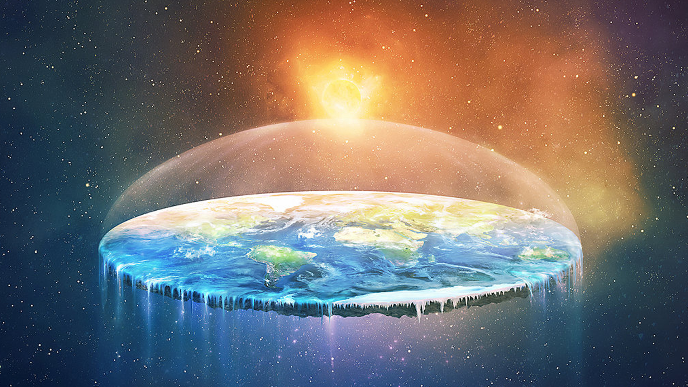

Flat earthers are a group of individuals who are 100% convinced taht the earth is indeed flat. They believe that Earth is a flat disk surrounded by a wall of ice which is Antarctica. They also believe that the images of the earth provided to us are simulated images created by the government to conceal the fact that Earth is flat.
From Wikipedia:
Modern flat-earthers generally embrace some form of conspiracy theory out of the necessity of explaining why major institutions such as governments, media outlets, schools, scientists, and airlines all assert that the world is a sphere. They tend to not trust observations they have not made themselves, and often distrust or disagree with each other.
Many people have dedicated their lives to proving this conspiracy theory. The flat earth movement has been ataedily increasing over recent years. Flat earthers share their theories and research through online discussion forums and also gather at conventions.
| Learn more about flat earth | |
|---|---|
| The Flat Earth Society | FAQ |
| Youtube | FLAT EARTH |
| Netflix | WATCH: Behind the Curve |